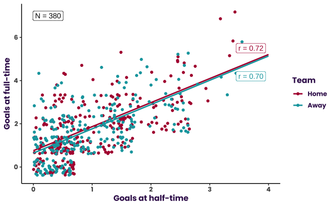

#Create tibbles based on if the home or away team scored the goals. This makes it easier to color-code the scatterplot and calculate separate linear regressions later.
home_goals <- tibble(soccer$HTHG, soccer$FTHG)
home_goals <- home_goals %>%
rename(
'half' = 'soccer$HTHG',
'full' = 'soccer$FTHG'
)
away_goals <- tibble(soccer$HTAG, soccer$FTAG)
away_goals <- away_goals %>%
rename(
'half' = 'soccer$HTAG',
'full' = 'soccer$FTAG'
)
#Create color vector to color-code home versus away in the scatterplot and regressions.
colors <- c('Home' = 'blue', 'Away' = 'red')
#Create scatterplot with two regression lines for home and away teams, respectively.
q1_goals <- ggplot() +
geom_jitter(data = home_goals, aes(x = half, y = full, color = 'Home'), width = 0.7) +
geom_smooth(data = home_goals, aes(x = half, y = full, color = 'Home'), method = lm, se = FALSE) +
geom_jitter(data = away_goals, aes(x = half, y = full, color = 'Away'), width = 0.7) +
geom_smooth(data = away_goals, aes(x = half, y = full, color = 'Away'), method = lm, se = FALSE) +
xlim(0, 4) +
labs( x = 'Half-time Goals',
y = 'Full-time Goals',
color = 'Team') +
scale_color_manual(
breaks = c("Home", "Away"),
values = darken(pal_pl, 0.3)
) +
theme_classic(base_size = 12) +
theme(
text = element_text("Poppins",
face = "bold",
color = pal_pl_logo)
) +
# theme_minimal(base_size = 12) +
# scale_color_manual(values = colors) +
guides(color = guide_legend(reverse = TRUE)) #Switch legend entries.
#Suppress warning messages when printing ggplot object.
suppressMessages(print(q1_goals))